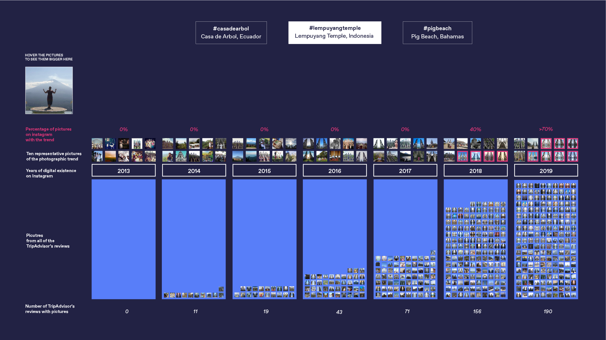
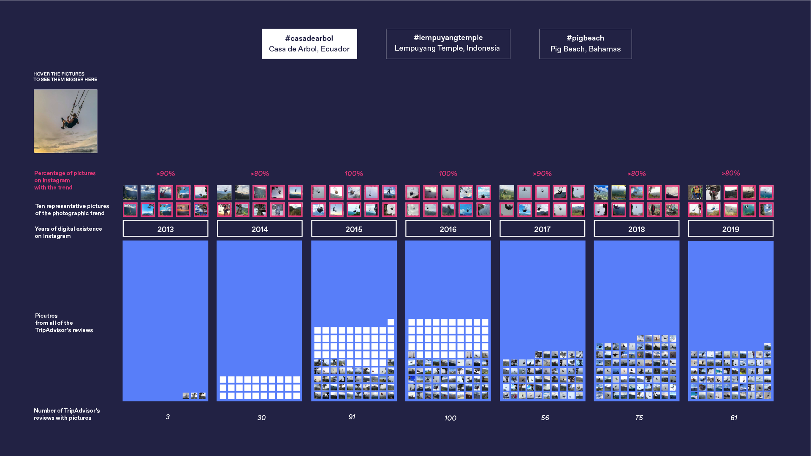

Could the beginning of a simple photographic trend boost tourism so much that people travel to it just to be part of the iconic location? We think it might. The three analyses of photographic data we propose seem to suggest that popularity on Instagram is followed by popularity on Tripadvisor. It is highly likely that a place becomes famous online and then people literally follow.
In Lempuyang Temple (Bali), the interest grows over time simultaneously on the two platforms. When the trend hits the platform, people post more about it and interest grows exponentially. At the beginning of 2018 an artificial manipulation of the temple image appears. It is a picture taken with the help of a mirror. From there on, popularity grows constantly and exponentially.
At Pig’s Island in the Bahamas people are interested in taking pictures of themselves swimming together with pigs. At Pig Beach we see the first increase in posts in 2014, but the real increment in popularity happens in the years 2016 2017, after a few famous people post their deeds at Pig’s Beach in 2016 (Amy Schumer, Trump Jr., etc.)

La casa del arbol or Swing at the End of the World saw increased popularity in the year 2014. In fact, in the same year a photographer named XXX won a National Geographic contest with the picture of La casa del arbol. Since then popularity rose and people continued to be photographed at the Swing at the End of the World.
